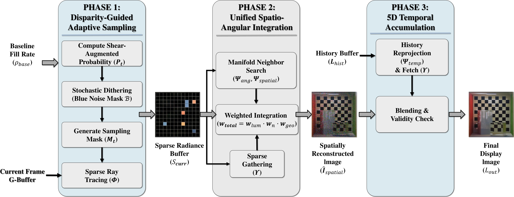

Results

Full-view comparison between high-resolution reference (HR) and our method on StairCase and Bathroom scenes at 4K.
Beijing University of Posts and Telecommunications · Jiangsu University of Technology · Unity
* Equal contribution † Corresponding authors
This paper presents a modern, comprehensive system for real-time light field path tracing, addressing the prohibitive computational overhead inherent in driving high-density 3D displays. While offering immersive glasses-free 3D experiences, these displays necessitate the synthesis of massive angular information across numerous viewpoints to satisfy their optical requirements. We resolve this by reformulating light field synthesis as a sparse signal reconstruction task on a high-dimensional manifold, introducing a unified algebraic framework governed by three mathematical primitives—Φ, Ψ, Υ—that respectively decouple rendering logic from heterogeneous optical hardware, establish deterministic geometric connectivity across disparate viewpoints, and enable atomic access to unstructured sparse data. We demonstrate a complete end-to-end system capable of driving 8K light field displays at interactive frame rates using a single consumer GPU, outperforming existing baselines in computational efficiency and reconstruction fidelity while supporting complex modern light transport effects.
@inproceedings{yang2026ssat,
title={Real-Time Light-Field Path Tracing for 3D Displays
via Sparse Spatial-Angular-Temporal Reconstruction},
author={Yang, Zongyuan and Zou, Liulei and Zhu, Ling and
Xiong, Yongping and Fan, Honghui and Liu, Baolin and
Song, Yingde and Zhu, Yu and Zeng, Chang and Ye, Wangping},
booktitle={ACM SIGGRAPH 2026 Conference Papers},
year={2026},
doi={10.1145/3799902.3811158},
publisher={ACM}
}
We reformulate real-time automultiscopic rendering as sparse signal reconstruction on the 5D phase space (Ω × Π × T). The core insight is that sub-pixels on a lenticular display—whether spatially adjacent, angularly neighboring, or temporally correlated—observe the same scene geometry from distinct phase-space positions, forming a smooth manifold.
Three hardware-aware operators underpin the framework:
Together, they convert the hardware's angular interlacing from a rendering bottleneck into a structural advantage for sparse reconstruction.

Full-view comparison between high-resolution reference (HR) and our method on StairCase and Bathroom scenes at 4K.